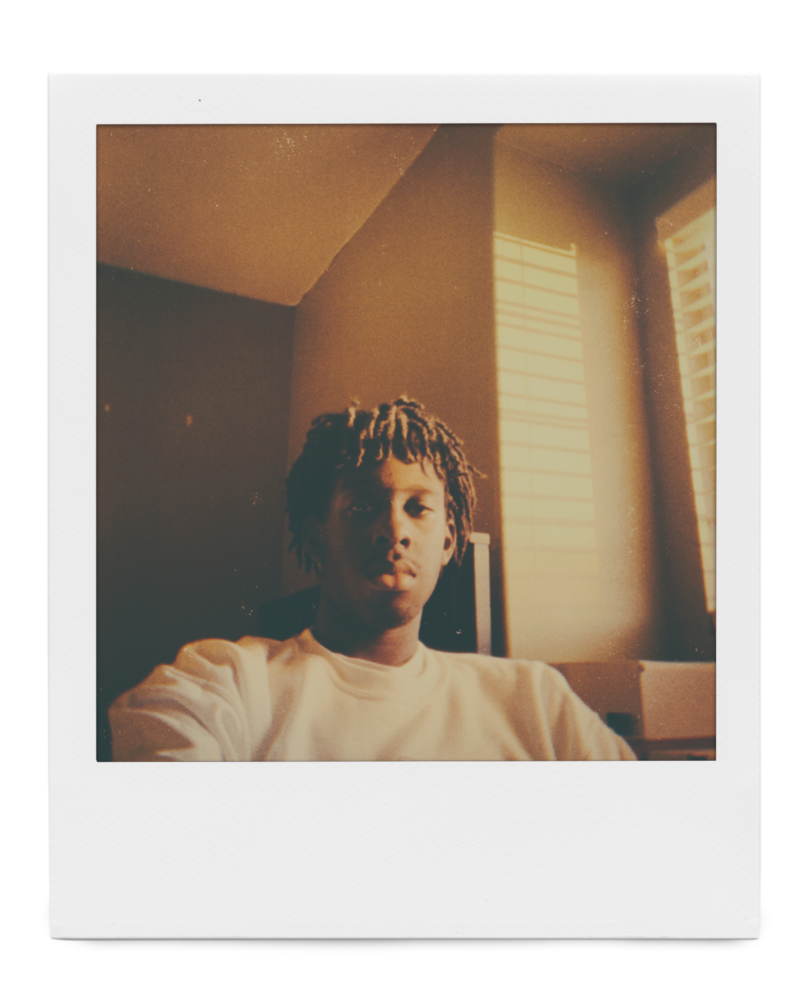
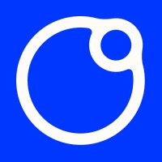
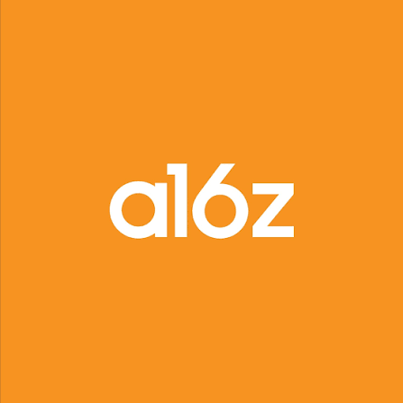
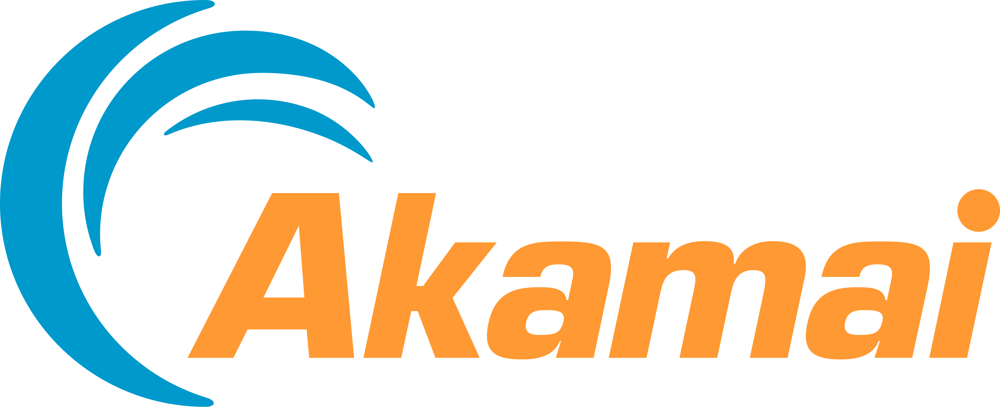

Shane Janney
562-362-2582
shanej97809@gmail.com
562-362-2582
shanej97809@gmail.com
I did not really plan to end up with a portfolio that mixes infrastructure work, AI safety research, and photography. I kept following problems I wanted to understand. That took me from building internal tools at Microsoft and Akamai to working on observability at CLEAR, then back to CLEAR full time on authentication and identity infrastructure. Outside work, I spend a lot of time reading and experimenting with model internals, and I recently completed BlueDot Impact's Technical AI Safety fellowship. The creative work is not a side note either. Photography and creative direction are the other way I like to pay attention to how things are put together.

26-06-01

Technical AI Safety Fellow at BlueDot Impact Completed the technical fellowship with a focus on how advanced model behavior can be monitored and evaluated.26-06-01
Software Engineer at CLEAR
Working on the authentication and identity infrastructure behind CLEAR's Unified Auth systems.
25-06-01
Software Engineering Intern at CLEAR
Built an internal observability tool around Cortex metrics that covered more than 100 microservices.
24-06-01

a16z College Fellow Selected for the college fellow program and spent the summer around early stage founders and builders.24-05-01

Software Engineering Intern at Akamai Technologies Built internal tooling around VM orchestration for workflows used by more than 1,000 people.23-08-01
Undergraduate Research Assistant at SensorLab, University of Arizona
Worked on the data ingestion path for experiments and improved throughput by 15%.
23-05-01
Software Engineering Intern at Microsoft
Built a decentralized Azure extension that was adopted by more than 1,000 developers.
22-08-01
Bachelor of Science in Computer Science, University of Arizona
Graduated in 2026. I spent most of college bouncing between systems, machine learning, and whatever project I was building that semester.
22-06-01
Google Computer Science Summer Institute
Built 15 JavaScript projects and finished with a live collaborative project.